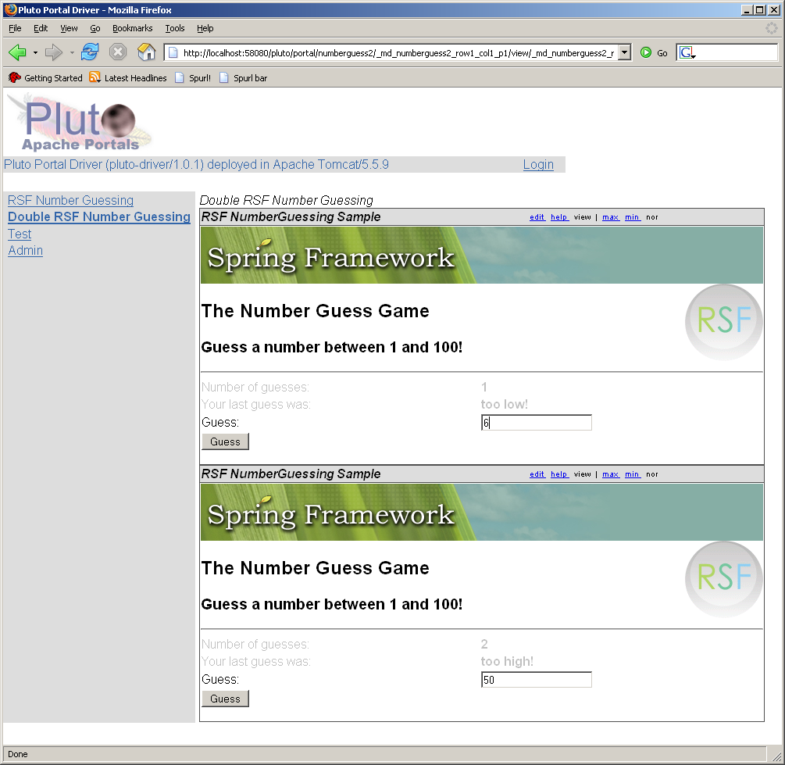
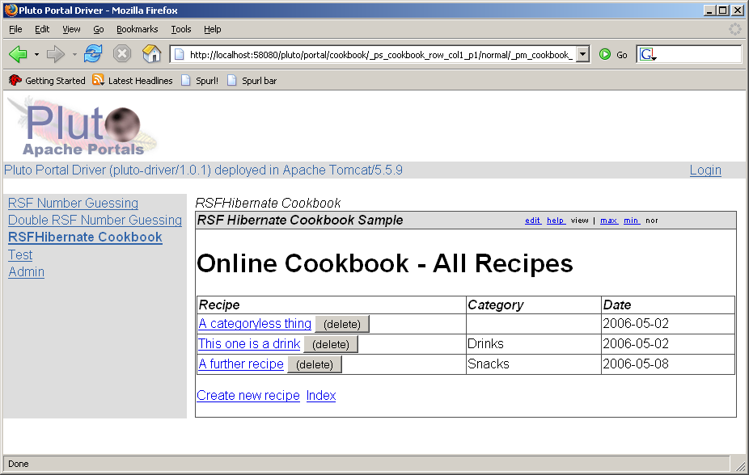

RSFPortlet, held in saffron SVN at https://saffron.caret.cam.ac.uk/svn/projects/RSFPortlet/trunk , is a Maven JAR project which produces the library rsfportlet. This library contains all the code necessary for deploying an RSF application as a JSR-168 portlet. Converting an RSF app to a portlet is a matter of:
, is a Maven JAR project which produces the library rsfportlet. This library contains all the code necessary for deploying an RSF application as a JSR-168 portlet. Converting an RSF app to a portlet is a matter of:
- producing appropriate HTML fragment templates
- including rsfportlet.jar as a dependency
- packaging the application with a suitable web.xml, which
- invokes the Spring context loader listener
- includes the two RSF-portlet Spring configuration files, portlet-applicationContext.xml and portlet-requestContext.xml
- provide portlet.xml referring to a suitable RSF-invoking Portlet.
- supplying suitable packaging to your Portlet container to deploy the resulting portlet webapp/WAR.
The links in the above description are to the JSR-168 version of the RSF NumberGuessing sample, the paradigmatic "flow-based" webapp game that every web framework provides. The SVN base of this project is at https://saffron.caret.cam.ac.uk/svn/projects/RSFPortletSamples/trunk/NumberGuess.
The RSF Hibernate Cookbook sample has also been "ported" (i.e. with HTML and packaging) to JSR-168, in SVN at https://saffron.caret.cam.ac.uk/svn/projects/RSFPortletSamples/trunk/HibernateCookbook.
RSFPortlet and Spring versions#
It is not necessary to be "too" careful matching the dependent version of RSFPortlet on the Spring portlet JAR spring-portlet, with that of the underlying Spring version. The current version of RSFPortlet (0.7.2) uses version 2.0.6, aligning with the current Spring release. The only use RSFPortlet makes from spring-portlet is to i) locate the ApplicationContext from the PortletContext (in fact, ServletContext), and ii) file upload support via PortletMultipartResolver.Essentially you may use any reasonably recent version of Spring you are comfortable with - the main backlimit is Spring 1.2.0, where support for the "short bean syntax" in configuration files was introduced.

PortletNumberGuess was tested in Apache's Pluto version 1.01 - the most directly useful documentation is the Pluto User's Guide which explains the Pluto deployment and packaging structure.
Getting Started with Pluto#
After downloading and unpacking first Tomcat and then Pluto as per the instructions, you will run into a number of oddities in getting off the ground that I document here to save others from suffering the pain:
Log4J#
RSF projects generally use Log4J. If you deploy them within Pluto as is, this will cause commons-logging to blow up as it dynamically hoovers the Log4J classes out of the JAR. To get them to run properly, make sure you have placed log4j.jar within shared/lib of Tomcat.web.xml#
Pluto contains poor code which reparses the web.xml file for your portlet webapp to discover the mappings for the special "invoker servlet" which it requires. If this file is in 2.4 format, this code will fail silently! make sure that your web.xml is in 2.3 format.The Pluto Invoker Servlet#
The method Pluto uses to embed itself in Tomcat requires each webapp/portlet to declare an instance of the Pluto "Invoker Servlet", of which an example definition can be seen in the web.xml referenced above. In particular, the portlet-guid parameter is derived from two parts, being servlet context name.portlet-name. I.e. the servlet context name is typically the name of the directory in which the webapp is hosted, and the portlet name is the name given to portlet-name in portlet.xml.pageregistry.xml and portletentityregistry.xml#
The former file defines the layout of portlet pages, and the latter is used to register portlet instances with the Pluto (in terms of the guid described above). The NumberGuessing sample contains example stanzas which can be cut and pasted into the files of the same name in tomcat\webapps\pluto\WEB-INF\data.portletcontents.txt#
This vital file needs to list the name of the servlet contexts themselves that contain any portlets. Make sure you add your reference here. I couldn't find this particularly important point documented anywhere.To be sure, Pluto claims to have an "admin app" which will perform many of these above deployment tasks in one step, but given during development I had no confidence I could undo or understand any of the effects of this app on the Pluto configuration files I avoided using it. You may have success with it if you try to use it - good luck!
The below screenshot shows two independent instances of the NumberGuessing sample running as Portlets inside Pluto 1.0.1 - note that they both have their independent "flow state" representing their point in the game, that do not interfere. Actually RSF flows already had this property in the plain Servlet environment, so this does not represent much of a point.

And here is the standard "Hibernate Cookbook" sample (Java version):

Add new attachment
List of attachments
| Kind | Attachment Name | Size | Version | Date Modified | Author | Change note |
|---|---|---|---|---|---|---|
png |
cookbook-pluto.png | 49.0 kB | 1 | 19-Jul-2006 09:36 | AntranigBasman | |
png |
double-numberguess-pluto-2.png | 186.0 kB | 1 | 19-Jul-2006 09:36 | AntranigBasman |
{kind=link}
{kind=link}
{kind=link}
{kind=link}
Documentation
Developers
Javadocs
Designers
Sample RSF Apps
Presentations
Acronyms
Downloads
Current Release
Trunk
Distributions
Old Versions
Community
Q&A
Forums
Mailing Lists
Issue Tracker
People
Design
Roadmap
Integrations
Concepts
Philosophy